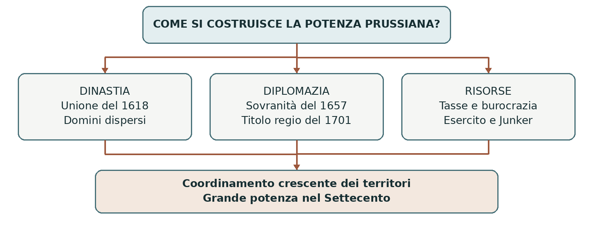

1525–1701 CON SVILUPPI NEL SETTECENTO
La Prussia da ducato a regno
Il Regno di Prussia nacque dall’unione dinastica di territori separati, dal superamento della dipendenza dalla Polonia e dal rafforzamento di esercito e amministrazione. Nel 1701 Federico III di Brandeburgo assunse il titolo di Federico I re in Prussia. Il prestigio regio precedette la piena affermazione come grande potenza, maturata nel Settecento.
0. Domanda generatrice
Come si costruisce uno Stato forte a partire da domini dispersi, con leggi e interessi differenti?
In sintesi L’unione sotto una dinastia non basta a creare uno Stato uniforme. Occorre seguire il rapporto fra diplomazia, amministrazione, esercito e nobiltà.
1. Il mondo precedente
Gli Hohenzollern governavano l’elettorato di Brandeburgo, parte del Sacro Romano Impero. Il principe
elettore partecipava alla scelta dell’imperatore. Più a est esisteva il territorio dell’Ordine teutonico, dal
quale nel 1525 nacque il Ducato di Prussia: il gran maestro Alberto di Hohenzollern aderì alla Riforma e
trasformò il dominio in un ducato ereditario, feudo della corona polacca.
Nel 1618 il ducato passò per eredità al ramo degli Hohenzollern che governava il Brandeburgo. I due territori ebbero lo stesso principe, ma restarono separati geograficamente e giuridicamente: il Brandeburgo apparteneva all’Impero, la Prussia ducale si trovava fuori dai suoi confini ed era ancora soggetta alla sovranità feudale polacca.
In sintesi L’unione del 1618 creò una compagine dinastica discontinua. Le guerre del Seicento mostrarono la necessità di rafforzarne difesa e coordinamento.
2. Le fratture
La guerra dei Trent’anni devastò molti territori degli Hohenzollern. Federico Guglielmo, il Grande
Elettore, al governo dal 1640 al 1688, cercò di superare la debolezza militare e la dipendenza dalle
decisioni delle assemblee provinciali. La pace di Westfalia del 1648 gli procurò importanti acquisizioni
territoriali, ma non sciolse il vincolo feudale della Prussia con la Polonia.
La svolta giunse durante la guerra fra Svezia e Polonia: con i trattati di Wehlau e Bromberg del 1657 il
sovrano polacco riconobbe la piena sovranità degli Hohenzollern sulla Prussia ducale. La pace di Oliva del
1660 confermò il nuovo assetto. Diplomazia e cambiamenti di alleanza furono dunque decisivi quanto la
costruzione militare.
In sintesi La sovranità del 1657 eliminò un vincolo esterno, ma restava da coordinare il potere all’interno. Il rafforzamento dello Stato coinvolse i ceti dominanti.
3. Attori, gruppi e conflitti
La monarchia non cancellò la nobiltà: ne trasformò il rapporto con il centro. Gli Junker conservarono privilegi sociali nelle campagne, mentre trovavano nell’esercito e nel servizio dello Stato nuove funzioni.
| Attori | Obiettivi e interessi |
|---|---|
| Dinastia Hohenzollern | Unificare il comando, difendere i domini e ottenere riconoscimento internazionale. |
| Junker | Conservare proprietà e poteri signorili, partecipando alla carriera militare e al governo. |
| Funzionari e ufficiali | Organizzare entrate, reclutamento e applicazione delle decisioni del sovrano. |
| Assemblee provinciali | Difendere privilegi e controllo locale su tasse e amministrazione. |
| Contadini e abitanti delle città | Sostenere prelievi e servizio militare, con diritti e obblighi diseguali. |
In sintesi Lo Stato crebbe attraverso conflitti e accordi con le élite. L’accentramento politico non comportò automaticamente l’uguaglianza sociale.
4. Il processo storico
Il Grande Elettore e la costruzione dello Stato
Federico Guglielmo potenziò un esercito permanente, che richiedeva entrate regolari. Rafforzò quindi gli
uffici incaricati della riscossione e dell’approvvigionamento. Il nesso era circolare: le tasse sostenevano le
truppe e la disponibilità delle truppe accresceva la forza negoziale del principe verso i ceti provinciali.
Il controllo centrale si estese gradualmente, con differenze fra territori. Nelle campagne orientali il compromesso con gli Junker lasciò larga parte del potere signorile sui contadini. La nobiltà venne legata alla dinastia anche attraverso il corpo degli ufficiali. Sviluppo di manifatture, accoglienza di lavoratori qualificati e promozione degli scambi miravano ad ampliare le risorse.
Il titolo regio del 1701
Il figlio del Grande Elettore, Federico III di Brandeburgo, ottenne il riconoscimento dell’imperatore
Leopoldo I al progetto di assumere la dignità regia. Il 18 gennaio 1701 si incoronò a Königsberg e prese il
nome di Federico I re in Prussia. L’appoggio militare agli Asburgo, alla vigilia della guerra di
successione spagnola, favorì l’accordo.
La formula “re in Prussia” aveva un significato preciso: il ducato era fuori dall’Impero e non comprendeva tutta la regione prussiana, parte della quale restava polacca. Il sovrano continuava a essere elettore di Brandeburgo all’interno dell’Impero. Il titolo accrebbe il rango della dinastia, senza trasformare in un giorno tutti i domini in un territorio omogeneo.
I sovrani del Settecento
Federico Guglielmo I, re dal 1713 al 1740, sviluppò ulteriormente esercito, disciplina finanziaria e
amministrazione. Federico II, suo figlio, regnò dal 1740 al 1786: conquistò gran parte della Slesia durante
la guerra di successione austriaca e la conservò dopo la guerra dei Sette anni. Questi eventi riguardano
Federico II, non Federico I.
Federico II promosse manifatture, riforme amministrative e istruzione elementare, ribadita dal regolamento scolastico del 1763. Il linguaggio del sovrano al servizio dello Stato conviveva con autorità monarchica e privilegi nobiliari. La servitù contadina non fu abolita in generale. Le riforme favorirono la potenza prussiana senza cancellare la struttura diseguale della società.
In sintesi Titolo regio, amministrazione ed esercito si consolidarono in fasi successive. Distinguere i sovrani evita di attribuire a un solo protagonista un processo secolare.
Lo snodo decisivo
1657 e 1701 sono due passaggi diversi: il primo riguarda la sovranità del ducato, il secondo il rango del sovrano. La grande potenza militare del Settecento è un ulteriore sviluppo.
5. Le fonti in dialogo
Un titolo politico da leggere con precisione
Fonte da analizzare: la titulatura “re in Prussia” assunta nel 1701 e ricostruita dall’Archivio segreto di Stato prussiano. Titoli, formule ufficiali e atti di incoronazione comunicavano il rango del principe a sudditi e altre corti.
Contenuto — sintesi didattica: Federico III di Brandeburgo diventa Federico I re in Prussia. La preposizione “in” circoscrive il titolo e permette di distinguere il nuovo regno dalla parte di Prussia ancora legata alla Polonia.
Interpretazione e limiti: La formula documenta una rivendicazione e un riconoscimento di rango. Non dimostra che tutti i territori fossero già unificati né misura la forza effettiva di esercito e finanze.
Domanda di lettura: Che cosa perderemmo, nella spiegazione storica, sostituendo senza precisazioni “re in Prussia” con “re di tutta la Prussia”?
Archivio di Stato prussiano — Storia della titulatura regia
In sintesi Anche una formula apparentemente breve rivela rapporti territoriali e diplomatici. Il rango aveva effetti politici, ma richiedeva risorse per essere sostenuto.
6. Conseguenze e nuovo assetto
Il consolidamento prussiano modificò l’equilibrio dell’Europa centrale. Nel Settecento la Prussia divenne la principale concorrente dell’Austria nel mondo tedesco. L’esercito e la burocrazia collegavano domini diversi, mentre la dinastia costruiva un’identità politica comune.
I costi della potenza ricadevano in misura diseguale sulla società. La nobiltà conservava privilegi e i contadini sopportavano dipendenze e obblighi: l’efficienza dello Stato poteva crescere senza una pari estensione delle libertà.
In sintesi Accentramento e modernizzazione amministrativa non coincidono con emancipazione sociale. Questa distinzione risponde alla domanda iniziale.
7. Conclusione
Lo Stato prussiano si rafforzò combinando occasioni diplomatiche, entrate stabili, forze armate e accordi con gli Junker. La sua costruzione fu graduale e dipese sia da innovazioni sia dalla conservazione dei privilegi.
Sintesi finale Il Ducato di Prussia nacque nel 1525 come feudo polacco. Nel 1618 fu unito dinasticamente al Brandeburgo. La piena sovranità fu ottenuta nel 1657 e confermata nel 1660. Nel 1701 Federico I assunse il titolo di re in Prussia. Esercito, amministrazione e conquiste consolidarono la potenza nel Settecento.
Per studiare e collegare
Coordinate essenziali
Spazio: Brandeburgo, con centro a Berlino, e Prussia ducale, con centro a Königsberg; altri domini sparsi
nel mondo tedesco. Tempo: 1525–1701 per la formazione; sviluppo della potenza nel XVIII secolo.
Saperi irrinunciabili
1. Brandeburgo e Prussia avevano una diversa posizione giuridica.
2. Il Ducato di Prussia era inizialmente un feudo della corona polacca.
3. L’unione del 1618 fu dinastica e non cancellò le discontinuità territoriali.
4. Federico Guglielmo il Grande Elettore governò dal 1640 al 1688.
5. Westfalia non diede la piena sovranità sulla Prussia.
6. Wehlau e Bromberg nel 1657 sciolsero la dipendenza feudale dalla Polonia.
7. Nel 1701 Federico III di Brandeburgo divenne Federico I re in Prussia.
8. Gli Junker conservarono privilegi e si legarono al servizio militare.
9. Federico Guglielmo I rafforzò esercito e amministrazione.
10. Federico II conquistò la Slesia e promosse riforme senza abolire ogni servitù.
Mappa concettuale

La dinastia collega i territori; la diplomazia ne modifica lo status; esercito e fiscalità rendono più efficace il comando. I tre processi hanno tempi diversi.
Strumenti e attività
Linea del tempo ragionata
| Quando | Che cosa cambia |
|---|---|
| 1525 | Secolarizzazione dell’Ordine teutonico e nascita del ducato. |
| 1618 | Unione dinastica con il Brandeburgo. |
| 1640–1688 | Governo del Grande Elettore. |
| 1657–1660 | Sovranità riconosciuta dalla Polonia e confermata a Oliva. |
| 1701 | Federico I re in Prussia. |
| 1713–1786 | Federico Guglielmo I e Federico II consolidano la potenza. |
Vocabolario essenziale
Elettorato. Territorio il cui principe aveva diritto di partecipare all’elezione imperiale.
Unione dinastica. Territori distinti governati dallo stesso sovrano per diritto ereditario.
Junker. Nobiltà terriera prussiana, particolarmente forte a est dell’Elba.
Esercito permanente. Forza militare mantenuta stabilmente anche in tempo di pace.
Accentramento. Trasferimento di decisioni e risorse verso il governo centrale.
Attività di comprensione
1. Spiega la differenza fra unione dinastica, sovranità e titolo regio, associandola a tre date.
2. Ricostruisci il legame fra tasse, esercito e compromesso con gli Junker.
3. Prepara una tabella per distinguere Grande Elettore, Federico I, Federico Guglielmo I e Federico II: indica per ciascuno un contributo preciso.
Fonti e approfondimenti
Lezione di riferimento: «moderna.ppt», diapositiva 12 e richiamo alla 18. I collegamenti seguenti permettono di leggere la fonte e approfondire i passaggi centrali.
Treccani — Prussia, quadro storico
Treccani — Guerre del Nord e sovranità prussiana